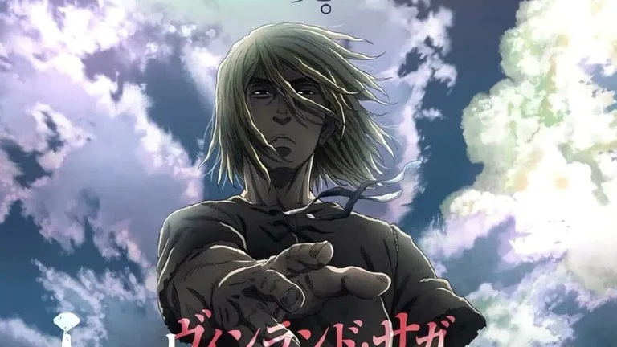

Depuis qu'Askeladd, un chef de guerre fourbe et sans honneur, a tué son père lorsqu'il était enfant, Thorfinn le suit partout dans le but de se venger. Mais bien qu'il soit devenu un guerrier redoutable, il ne parvient toujours pas à vaincre son ennemi. Au fil des ans, enchaînant missions périlleuses et combats afin d'obtenir des duels contre l'homme qu'il hait plus que tout, le gentil Thorfinn est devenu froid et solitaire, prisonnier de son passé et incapable d'aller de l'avant. Jusqu'à ce que la vie le force à regarder le monde différemment…
